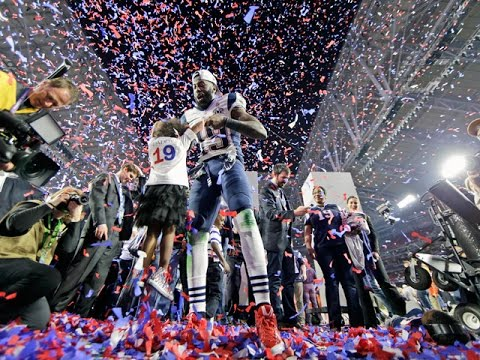
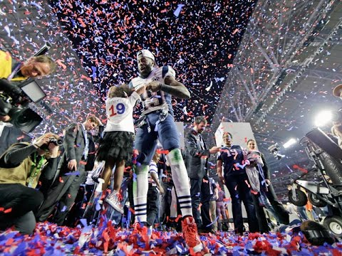

Every year, two teams make it two the Super Bowl. Only one team walks home with the Lombardi Trophy on Super Bowl Sunday. This page will not only showcase the winners of the Super Bowl, but always every team's number of appearances.
 

Only four teams have never made a Super Bowl: Jacksonville Jaguars, Detroit Lions, Cleveland Browns, and Houston Texans; however, twelve teams are winless.
| Teams | Appearances | Wins | Losses |
|---|---|---|---|
| Steelers | 8 | 6 | 2 |
| Patriots | 10 | 5 | 5 |
| Cowboys | 8 | 5 | 3 |
| 49ers | 6 | 5 | 1 |
| Packers | 5 | 4 | 1 |
| Giants | 5 | 4 | 1 |
| Broncos | 8 | 3 | 5 |
| Raiders | 5 | 3 | 2 |
| Redskins | 5 | 3 | 2 |
| Dolphins | 5 | 2 | 3 |
| Colts | 4 | 2 | 2 |
| Ravens | 2 | 0 | 0 |
| Rams | 3 | 1 | 2 |
| Seahawks | 3 | 1 | 2 |
| Eagles | 3 | 1 | 2 |
| Chiefs | 2 | 1 | 1 |
| Bears | 2 | 1 | 1 |
| Jets | 1 | 1 | 0 |
| Buccaneers | 1 | 1 | 0 |
| Saints | 1 | 1 | 0 |
| Vikings | 4 | 0 | 4 |
| Bills | 4 | 0 | 4 |
| Bengals | 2 | 0 | 2 |
| Panthers | 2 | 0 | 2 |
| Falcons | 2 | 0 | 2 |
| Chargers | 1 | 0 | 1 |
| Titans | 1 | 0 | 1 |
| Cardinals | 1 | 0 | 1 |
| Browns | 0 | 0 | 0 |
| Texans | 0 | 0 | 0 |
| Jaguars | 0 | 0 | 0 |
| Lions | 0 | 0 | 0 |